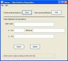

New Run Time Statistics
The Statistics Repository is dynamically alterable with the New Run Time
Stats GUI/Non-GUI. During the session, if Tymeac finds a problem writing
statistics, then Tymeac sets statistics writing as unavailable. You may fix the
problem and reset statistics, stop all statistics or set new statistics
repository parameters below.
The non-frame version of this class is TyNewRTStatsClient, below.

Elements - each is mutually exclusive
DBMS Table -- Enter the name of the New DBMS Table.
Dir and/or File Name -- When using a local file
instead of a DBMS Table, then enter the name of the file. A directory is
optional
Alt -- When using an alternate class instead of the
above, enter the fully qualified class name.
Buttons
Reset -- Re-verifies the existing Statistics Repository on
the Server. If all goes well, then the Statistics Repository is restored.
Stop -- Stops all statistics writing on the Server.
Import -- Fetches the current Statistics Repository parameters from
the Server.
Update -- Fill in a new Statistics Repository parameters and press to
update on the Server. If you never had a Statistics Repository at Server start-up, then
you can add it now.
Message Block at bottom : -- (xx) is the return code for the non-gui
class. This is an information message:
(-1) Connection failure -- The RMI connection failed or the Tymeac Server
returned an invalid message.
Since Tymeac is fully open-source now, you must go to the source code to
find the return codes. All codes are public static final
int values in Class com.tymeac.base.SetUpStats.java. As of Release 6.2
they are as follows:
public
static
final
int
StatsSuccess =
0; // success
public
static
final
int
StatsNoCurr
= 40; // no current stats
public
static
final
int
StatsNotNec
= 41; // stats doesn't need resetting
public
static
final
int
StatsFailVeryOld
= 42; // failed to verify
public
static
final
int
StatsCreateFail
= 43; // New stats failed to create
public
static
final
int
StatsFailVeryNew
= 44; // failed to verify
public
static
final
int
StatsNotInUse
= 45; // stats not in use
public
static
final
int
StatsStopped
= 46; // stats service stopped
com.tymeac.client.TyNewRTStatsClient (JavaDoc)
This is the Non-GUI equivalent of the GUI Class, above. An example of how
to use this class is: com.tymeac.demo.TyDemoClient_NewRTStats.java in the
<TymeacHome>source/com/tymeac/demo directory.
Constructor 1 -- has no arguments. This is for the RMI Server. The constructor gets a
new instance of a Tymeac internal class that is similar to TySvrComm
Constructor 2-- is for the internal server. The single argument is the Tymeac
Server Interface, TymeacInterface.
Instance Methods --
See the JavaDoc or source code.
| {kind=link}